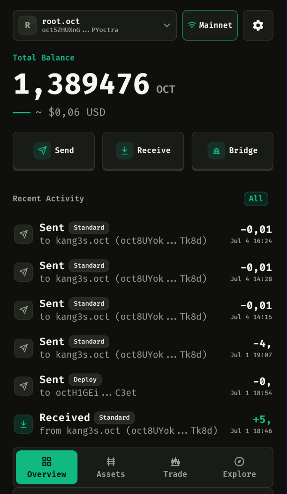

Multi-wallet management
Create, import, rename, reorder, and switch wallets from a compact offcanvas panel.
pocket octra
poctra brings Octra-native accounts and EVM account handling into one focused consumer wallet experience, designed for repeat use on mobile.

Feature Set
Create, import, rename, reorder, and switch wallets from a compact offcanvas panel.
Manage native OCT and manually added Octra-chain assets with send, receive, and history views.
Derive an EVM address from the Octra key, manage ERC20 tokens and NFTs, and send with gas review.
Resolve .oct names, preview recipients, configure identity providers, and surface names in activity.
Browse approved dApps, inject the poctra provider, and review connection or signing requests.
Bridge OCT to wOCT, recover bridge claims, and swap wOCT with ETH or USDT through a mobile trade flow.
Product Screens
Overview
A compact dashboard for wallet identity, network state, OCT balance, primary actions, and recent Octra activity.
Security Model
poctra keeps wallet secrets encrypted locally, separates sensitive screens from casual settings, and asks users to review transaction data before signing.
From OCT transfers and Octra Identity lookup to circle access, bridge recovery, and EVM token handling, poctra is designed as a practical consumer entry point into Octra.